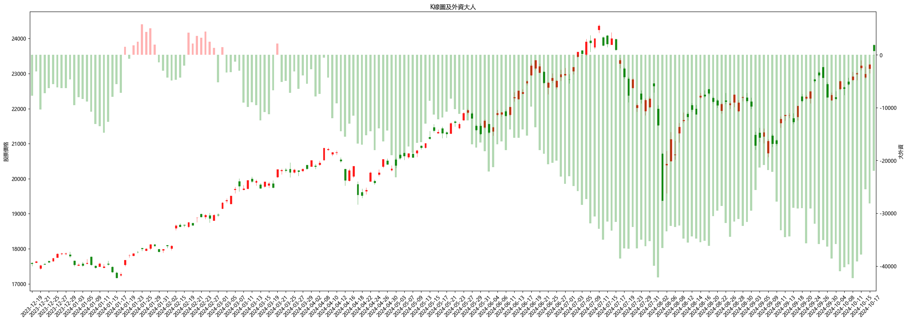
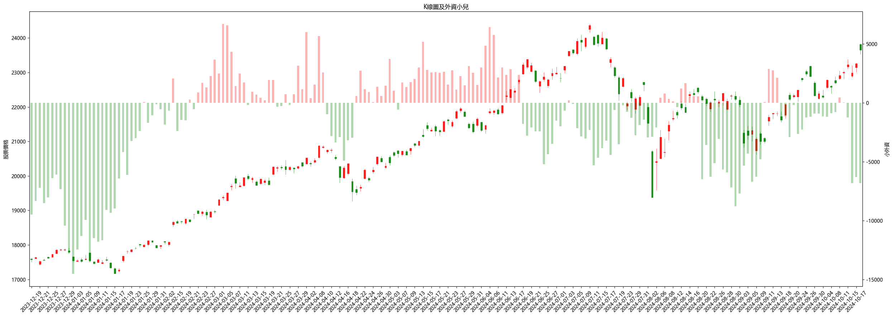
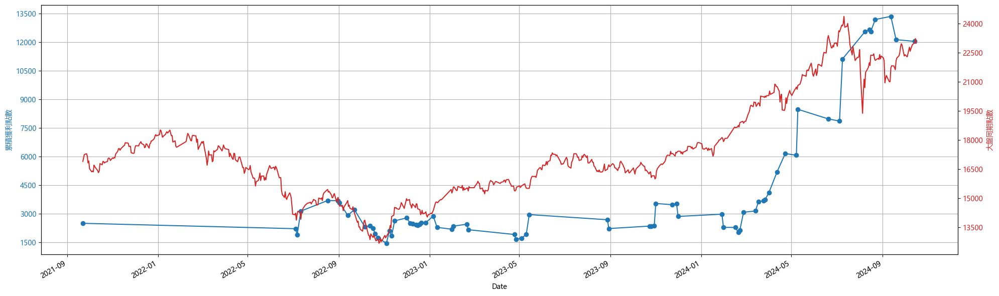
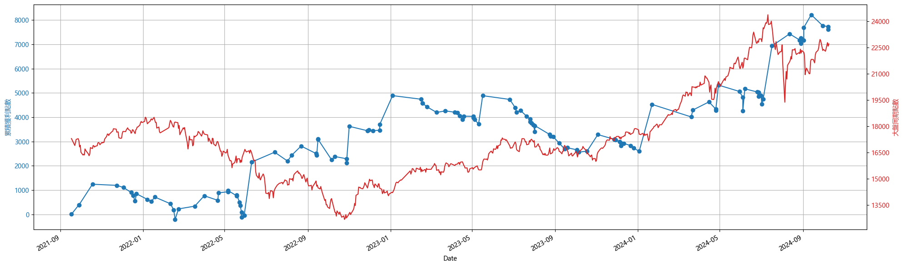
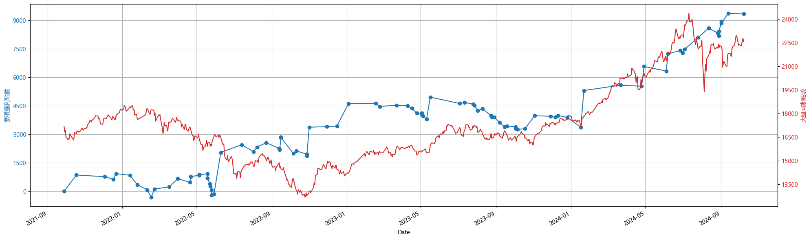
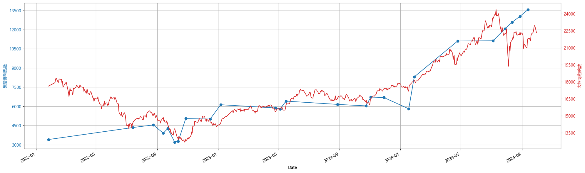

指數策略筆記

買賣權未平倉量比率
(一) 策略發想
台指期是許多人拿來長期持有並使用無限轉倉之術取代0050或006208，不僅可以降低管理費，也能透過適度的槓桿操作活化資金。如果能在長期持有的狀態下持續作價差，是否能更加放大獲利。
(二) 跟著籌碼走
1. 大外資
基本上今年外資的未平倉口數皆呈現淨賣超，但台指仍在台積電的帶動下持續向上，也因為外資整體還有避險單及選擇權部位，加上外資通常會看比較長，可能幾個季度或是年以上，因此無法在短期看出與台指期是否有關連性。 
2. 小外資
改用網路上俗稱的小外資，將前五大特定的外資部位移除(外資 - 五大外資(特定))後觀察走勢，可以發現相關性好像比較高一點。

小外資定義可以參考微股力 小外資計算
(三) 回測績效
1. 跟單小外資
盤後籌碼呈現小外資買進，隔天開盤就買，小外資賣出，隔天開盤就賣，做空亦然。
同時間點 :
- 大盤累積獲利:6086
- 策略一累積:12045
- 進出次數:71
- 第一次買進時間:2021-09-22
- 最後一次賣出時間:2024-10-16
比較同期大盤，進進出出共71次，同期贏大盤5959點，幾乎贏一倍

2. 只看10日線
當天收盤跌破10日線就空，收盤站上回補，收盤如果站上10日線，隔天開盤買，跌破收盤賣掉。
同時間點 :
- 大盤累積獲利:5404
- 策略二累積:7610
- 進出次數:125
- 第一次買進時間:2021-09-17
- 最後一次賣出時間:2024-10-09
比較同期大盤，進進出出共125次，同期贏大盤2206點，表現沒有用小外資當指標來的好。

3. 只看10日線(改良)
與第2點策略相同，但台指期在季線之上(60日)不做空，只做多。
同時間點 :
- 大盤累積獲利:5405
- 策略三累積:9337
- 進出次數:91
- 第一次買進時間:2021-09-28
- 最後一次賣出時間:2024-10-08
比較同期大盤，進進出出共91次，同期贏大盤3932點，顯示季線之上部做空是比較好的選擇，但表現仍然沒有比用小外資當指標來的好。

4. 小外資改良版10日線
延伸策略3的多空點位，並且增加小外資判斷方向。
-
判斷買進：查看當日的小外資是否為正，尾盤站穩十日線，隔日開盤買，賣出時看尾盤跌破十日線且判斷前日小外資是否為負。
-
判斷賣出：查看當日的小外資是否為負，尾盤跌破十日線，隔日開盤空，回補則看尾盤站回十日線且判斷前日小外資是否為正。
- 大盤累積獲利:4701
- 策略四累積:13569
- 進出次數:25
- 第一次買進時間:2022-01-26
- 最後一次賣出時間:2024-09-30
比較同期大盤，進出筆數大幅縮短到25次，且同期贏大盤9049點，顯示小外資和10日線兩個重要的濾網可以帶來最多的報酬
